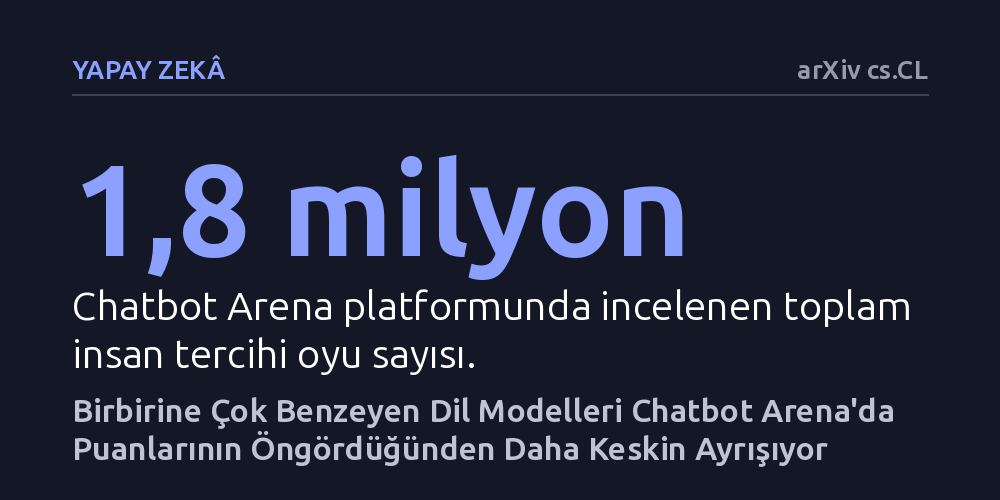

YAPAY-ZEKA · arXiv cs.CL · 2026-10-16
Araştırmacılar, Chatbot Arena'nın dayandığı puanlama yönteminin birbirine benzeyen dil modellerinde yanılıp yanılmadığını 1,8 milyon oyla inceledi. Analiz, aynı modelin farklı sürümleri arasındaki karşılaşmalarda kullanıcı tercihlerinin teorik puanın öngördüğünden 1,37 kat daha belirleyici olduğunu gösterdi.
Yapay zekâ modellerini tek bir yetenek puanına göre sıralayan popüler liderlik tabloları, birbirine çok benzeyen modeller arasındaki kafa kafaya rekabeti tam olarak yansıtmıyor.

Günümüzde hangi büyük dil modelinin daha başarılı olduğunu anlamak için binlerce kullanıcının yanıtları körleme oyladığı Chatbot Arena gibi platformlara güveniyoruz. Bu platformlar, satrançtaki Elo sistemine benzeyen ve her modele tek bir sayısal yetenek puanı atayan Bradley-Terry modelini temel alır. Bu sistemde, modelin genel yeteneğini temsil eden tek bir puanın, karşılaşacağı her türlü rakibe karşı kazanma şansını tam olarak yansıttığı varsayılır.
Ne var ki iktisat ve karar kuramında uzun yıllardır bilinen Luce seçim aksiyomu, birbirine çok benzeyen seçenekler söz konusu olduğunda bu tür tek boyutlu puanlama sistemlerinin aksayabileceğini söyler. Örneğin birbirine neredeyse ikiz kadar benzeyen iki dil modeli karşılaştırıldığında, kullanıcıların genel yetenek farkından bağımsız olarak iki yanıttaki en ufak bir üslup veya biçimlendirme ayrıntısına odaklanarak karar vermesi beklenir. Bu çalışma, işte tam bu teorik açığın gerçek dünyadaki yapay zekâ sıralamalarında yaşanıp yaşanmadığını sorguluyor.
Araştırmacılar bu soruyu yanıtlamak için Chatbot Arena platformunda toplanan 1,8 milyon gerçek insan tercih oyunu mercek altına aldı. Analizde, modeller arasındaki benzerlik derecesi üç farklı düzeyde sınıflandırıldı: aynı modelin farklı sürümleri, aynı ürün kuşağının farklı boyutları ve aynı laboratuvar tarafından geliştirilmiş farklı modeller.
İnceleme sadece geçmiş bir veri tabanıyla sınırlı tutulmadı; bulguların sağlamlığını test etmek için bir yıl sonra yayımlanan güncel oylar üzerinde de aynı analiz tekrarlandı. Ayrıca beraberlik oylarının farklı şekillerde işlendiği senaryolar, farklı konu başlıkları, kullanıcı istemlerinin alt kümeleri ve zamanlama etkileri gibi olası tüm dış etkenler titizlikle kontrol edildi.
Elde edilen bulgular, karar teorisinin öngörülerini doğruladı. Aynı modelin farklı sürümleri karşı karşıya geldiğinde kullanıcıların verdikleri oylar, Bradley-Terry modelinin öngördüğünden 1,37 kat daha kararlı ve belirleyici çıktı. Benzer şekilde, aynı ailenin farklı boyutlardaki modellerinde bu kararlılık çarpanı 1,26 kat, aynı şirketin ürettiği farklı modellerde ise 1,12 kat olarak ölçüldü. İki modelin verdiği yanıtların kelime seçimi ve biçimlendirme açısından birbirine benzeme oranı arttıkça bu sapmanın da belirginleştiği görüldü.
Araştırmacılar bu sapmayı gidermek amacıyla sisteme dört ila altı parametre ekleyen yalın bir düzeltme geliştirdi. Bu düzeltme, yüzlerce ek parametre içeren karmaşık modellere kıyasla test verilerindeki tercihleri daha isabetli öngördü. Ancak kazanımların neredeyse tamamının beraberlik oylarının daha iyi modellenmesinden kaynaklandığı, doğrudan başa baş galibiyet oranlarında belirgin bir üstünlük sağlanamadığı tespit edildi.
Çalışmanın en önemli pratik sonucu, bu istatistiksel sapmanın genel liderlik tablosundaki büyük resmi kökten değiştirmemesidir. Yapılan matematiksel düzeltmeler modellerin genel sıralamasını neredeyse hiç oynatmadı; güçlü modeller üst sıralarda, zayıf modeller ise alt sıralarda kalmaya devam etti. Dolayısıyla Chatbot Arena sıralamalarının genel hatlarıyla pratik değerini koruduğu görülüyor.
Buna karşın bulgular, birbirinin kopyası veya yakın türevi olan modelleri birbiriyle kıyaslarken tek bir puan farkına körü körüne güvenmemek gerektiğini gösteriyor. Çok benzeyen iki modelin kıyaslandığı ince ayrıntılarda, modellerin yanıt üslubu ve küçük biçimsel farklılıkları, puanlama sisteminin tahmin ettiğinden çok daha büyük bir ağırlık kazanıyor.